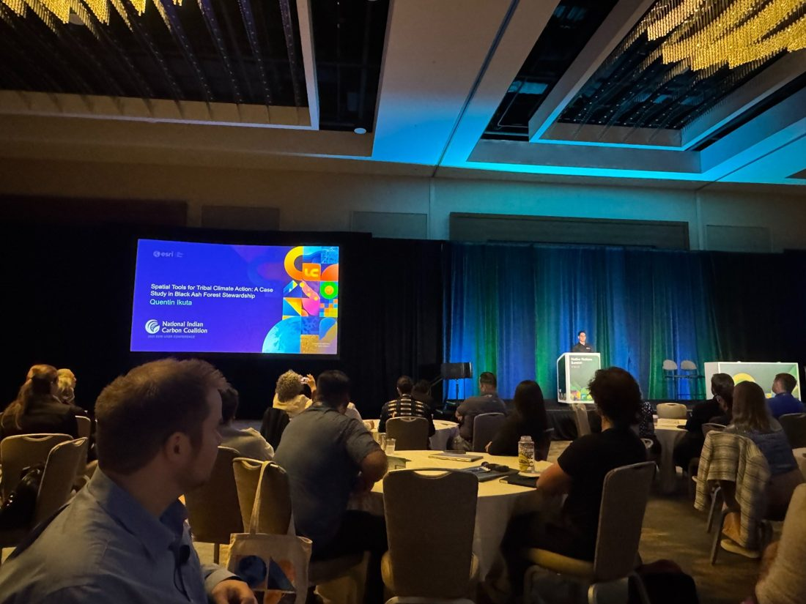
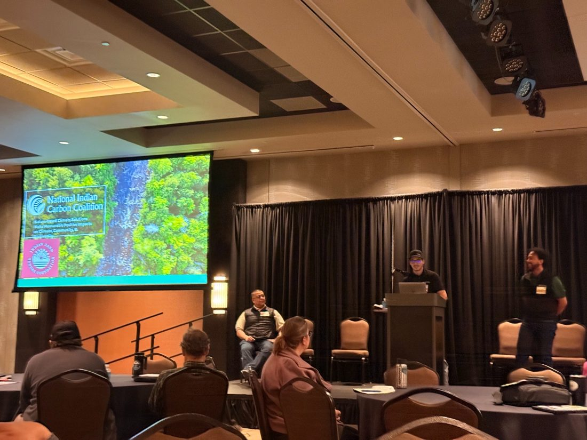

GIS and stewardship audiences
Presenting spatial tools and stewardship projects in ways that connect technical methods to land-based outcomes.
Engagement
I have presented on Tribal stewardship, GIS, conservation finance, climate action, and natural resource project implementation for technical, public, and community audiences.

Presenting spatial tools and stewardship projects in ways that connect technical methods to land-based outcomes.

Helping audiences understand conservation challenges, implementation pathways, and partner roles.

Translating technical conservation topics for public, partner, and community audiences.

Connecting field experience, agency context, and practical natural resource communication.
Making technical, policy, and funding topics understandable across disciplines and audiences.
Supporting meetings, workshops, partner conversations, and community-facing project communication.
Approaching engagement as relationship work, not just information delivery.